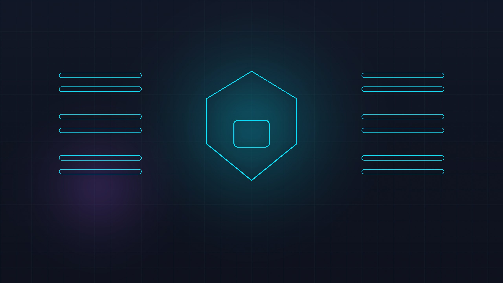

我曾经把用户的合同发给了模型I Once Sent Users' Contracts to a Model
这件事本身没错——用户上传合同，让 AI 标出风险条款，产品不这么干就没有意义。问题出在我没想清楚一件事：合同离开我的服务器之后，还会经过哪些地方？ Sending the contract was not the mistake in itself — users upload a contract and AI flags the risky clauses; the product makes no sense otherwise. The mistake was not asking: after the contract leaves my server, where else does it go?
上线第二周，一个用户发邮件说："你们的后台日志里有我的身份证号。"我一开始以为是他在开玩笑。查了一下，他说的没错——我们自己的错误日志里，确实留着一条完整的身份证号和手机号。 Two weeks after launch, a user emailed: "Your backend logs contain my national ID number." I assumed he was joking. He was not: our own error log did contain a full ID number and a phone number.
那次之后我明白了一件事：做 AI 应用，你真正在"发布"的东西不只是模型输出，还有用户的原始数据。你把它交给模型的次数越多，暴露面就越大。这篇文章讲清楚暴露面在哪、怎么把它关小，以及——哪些数据根本就不该出门。That incident taught me something: what you ship in an AI app is not only the model's output — it is also the user's raw data.Every time you hand data to a model you widen the exposure surface. This article covers where that surface is, how to shrink it, and which data should never leave the building at all.
数据到底流去了哪 5 个地方The Five Places Your Data Ends Up
很多人以为"数据发给模型"是一次性的传输。实际上它至少会经过 5 个地方，其中有两个你根本没想到。 Most people imagine "sending data to the model" as a one-off transfer. It actually passes through at least five places, and two of them you will not have thought of.
- ① 请求本身。拼进 prompt 的内容：合同全文、用户姓名、手机号、订单号、上一轮的对话历史。这一层是明面上的。① The request itself.Everything you paste into the prompt: the full contract, the user's name, phone number, order id, previous turns of the conversation. This one is obvious.
- ② 模型服务商的服务器。这是你看不见的一段：他们存在哪、留多久、谁能访问、有没有拿去训练。不同厂商、不同产品线（聊天版 vs API）政策不一样。② The model provider's servers.The invisible stretch: where it is stored, how long it is kept, who can access it, whether it is used for training. Policies differ by vendor and even by product line (chat app vs API).
- ③ 你自己的日志和错误上报。这是最容易出事的地方，也是我这次翻车的地方。绝大多数团队会记录"请求内容"和"报错堆栈"，而这两样经常包含完整的用户数据。③ Your own logs and error reporting.The most common failure point, and mine. Most teams record "request body" and "error stack", and both routinely contain full user data.
- ④ 向量库 / 检索库。如果你给产品加了知识库或记忆功能，用户说过的话会被切片、向量化、长期存下来。这一份数据的生命周期，比你想的长得多。④ The vector store / retrieval index.Add a knowledge base or a memory feature and everything users said gets chunked, embedded, and kept long-term. That copy has a much longer life than you expect.
- ⑤ 第三方 SDK。埋点分析、客服工单、崩溃监控、客服聊天窗口——这些工具默认会带上"上下文"，包括用户输入的内容。很多接入的时候没人看这一项。⑤ Third-party SDKs.Analytics, ticketing, crash monitoring, chat widgets — these ship "context" along, including what the user typed. Very few people check this one when integrating.
不用写代码，凭印象回答这 5 个问题：（1）你的错误日志里会记录用户的完整输入吗？（2）你用的模型服务商的 API，数据会被用于训练吗？（3）你的日志保留多久？（4）你的埋点工具会不会记录输入框内容？（5）用户要求删除数据时，你的向量库里的副本会一起删吗？——能全部答上来的，我没见过几个。Answer these five from memory: (1) Does your error log capture the user's full input? (2) Does your model provider's API use your data for training? (3) How long do you keep logs? (4) Does your analytics tool record what people typed? (5) If a user asks for deletion, does the copy in your vector store get deleted too? I have met very few people who can answer all five.
事故复盘：一条日志里的三个手机号Post-Mortem: Three Phone Numbers in One Log Line
事情的经过是这样的。我的产品在解析上传的合同时会调用一个第三方 OCR 服务。有一天它大面积超时，我为了排查，在错误日志里加了一行调试代码，把整个请求体打了出来。 Here is what happened. My product calls a third-party OCR service to parse uploaded contracts. One day it timed out broadly, and to debug I added one line that dumped the entire request body into the error log.
// 我加的那行"调试代码"——它后来成了事故源头
// The "debug line" I added — it later became the incident
logger.error('ocr request failed', {
requestId,
body: req.body, // ← 完整请求体，含姓名、手机号、身份证号
stack: err.stack,
});
那一刻我完全没想到"请求体"里有用户身份信息——因为我脑子里的"请求体"是那个合同的二进制流。实际上 OCR 服务那端我把元信息一起 POST 过去了：user_name、phone、id_card_tail。这些字段原封不动地进了我的日志系统。
At that moment I had no idea that the "request body" contained identity fields — in my head the body was just the contract binary. In fact I had POSTed the metadata along with it: user_name, phone, id_card_tail. Those fields went straight into my logging system.
结果是：这些日志被同步到了一个第三方崩溃监控平台。那个平台的默认保留期是 90 天，而我们的服务器日志只保留 30 天——也就是说，出事的时候，能查到的日志反而在别人家服务器上存得更久。The result: those logs were synced to a third-party crash-monitoring platform. Its default retention is 90 days, while our own server keeps logs for 30 — so at the moment of the incident, the logs we could still query were the ones sitting on someone else's server for longer.
那位用户是自己在第三方平台上搜索自己的手机号，搜到了自己的名字和一串身份证片段，然后发邮件质问我。他完全有权利这么做。The user searched their own phone number inside that third-party platform, found their name and a fragment of their ID number, and emailed me to ask why. They were entirely within their rights to do that.
我的处理：立刻删掉那 11 条日志并关掉这行调试代码；把日志系统里的原始请求体从历史记录中清理干净；给所有出错的第三方调用加了字段白名单（只允许记录 requestId、错误类型、耗时）；给用户写了一封解释邮件，并提供了删除其数据的通道。最后一条最重要——他提出删除之后，我必须能真的删干净，包括向量库里的那份副本。What I did: deleted the 11 log lines and removed the debug line; purged raw request bodies from log history; added a field allow-list to every failing third-party call (only requestId, error type and duration are allowed); wrote the user an explanation and gave them a deletion channel. The last part mattered most — when they asked for deletion, I had to actually delete everything, including the copy in the vector store.
三种立刻能做的脱敏方案Three Redaction Moves You Can Make Today
不需要买任何合规产品，也不要一上来就搞全套。先做这三件事，能挡掉我这次事故的 90%。 You do not need to buy a compliance product, and you certainly should not start with a full programme. Do these three things first and they would have blocked 90% of my incident.
方案一：入口处就把敏感字段摘掉（最有效）Move 1: Strip sensitive fields at the boundary
原则是"默认不发送"。凡是模型任务本身不需要的身份字段，一律不进 prompt：手机号、身份证、真实姓名、地址、订单号。需要指代用户时，用一个内部 user_id 或代号代替。The principle is "do not send by default". Any identity field the model task does not need stays out of the prompt: phone, ID number, real name, address, order id. When you need to refer to a user, use an internal id or a code instead.
方案二：日志只记白名单字段Move 2: Log an allow-list of fields
不要"排除敏感字段"，要"只记录这些字段"。排除法会随着需求变化漏掉新字段；白名单法则默认安全。Do not "exclude the sensitive fields" — do "log exactly these fields". Exclusion lists leak as requirements change; allow-lists are safe by default.
方案三：给第三方调用加字段白名单Move 3: Add field allow-lists to third-party calls
调用 OCR、转写、客服这些外部服务时，明确写出你发出去的字段列表，并写进代码注释里，让下次改动的人看得见。When calling OCR, transcription or support services, write down the exact list of fields you send — in the code, where the next person will see it.
// 1) 入口脱敏：只把模型需要的字段拼进 prompt
// Mask at the boundary: send only what the model actually needs
function toModelPayload(contract) {
return {
// 用代号代替真实身份 / use a code instead of the real identity
user_ref: contract.user_ref, // 内部 user_id，不是手机号
clauses: contract.clauses, // 条款文本
schema_version: 3,
};
}
// 2) 日志白名单：默认安全 / log allow-list: safe by default
const LOG_FIELDS = ['requestId', 'errorType', 'durationMs', 'model'];
function logCall(fields) {
const safe = Object.fromEntries(
LOG_FIELDS.map(k => [k, fields[k]]).filter(([, v]) => v !== undefined)
);
logger.error('llm.call_failed', safe); // 不再有 body
}
// 3) 第三方字段白名单 / allow-list for third-party calls
const OCR_ALLOWED = ['file_ref', 'lang', 'callback_url']; // 不含姓名与证件号
代价我也说清楚：入口脱敏让每请求多了约 12ms（我本地跑的正则匹配）；日志白名单让我少了一些排查信息，有一次排查耗时因此多花了半小时；给第三方加白名单则要求你回头改已经写好的调用代码。 Here is the honest cost: masking at the boundary added about 12ms per request for regex matching on my machine; the log allow-list removed some debugging detail and made one investigation half an hour longer; and the third-party allow-list meant going back to rewrite calls I had already written.
如果你的任务并不需要原文——比如只是做分类、打标签、算情绪——那就别把原文发出去。在本地先跑一个规则或小模型做预处理，只把结果发给大模型。这既省隐私，也省钱（token 少一半以上）。If your task does not need the original text — say, just classifying, tagging or scoring sentiment — do not send the original. Preprocess locally with a rule or a small model and send only the result to the big model. You keep the privacy and you save the tokens — often more than half of them.
你的数据会被拿去训练吗Will Your Data Be Used for Training?
这是所有人都会问、但很少有人去查证的问题。答案不是简单的"是"或"否"，而是取决于你用哪种产品形态、哪家厂商、有没有单独签协议。 This is the question everybody asks and almost nobody verifies. The answer is not a yes or a no — it depends on which product form you use, which vendor, and whether you signed a separate agreement.
- 官方 API（走开发者平台）：默认一般不用于训练，但请求会在服务端保留一段时间（常见是 30 天，用于安全监控和滥用检测）。部分厂商提供"零保留"或"不留存"选项，需要单独申请并满足条件。Official APIs (developer platform): generally not used for training by default, but requests are retained server-side for a period (commonly 30 days for safety monitoring and abuse detection). Some vendors offer zero-retention options, which must be requested and may have conditions.
- 网页版 / 桌面 App 里的对话：政策通常更宽，保留期更长，通常可以在设置里关闭"用于改进模型"。但请注意：这类产品的条款可能随时调整，不适合承载商业敏感数据。Chat in the web/desktop app: policies are usually broader, retention longer, and you can often turn off "improve the model" in settings. But terms can change, which makes them a poor home for commercially sensitive data.
- 企业版 / 私有部署：可以签数据处理协议（DPA），明确约定不训练、限定留存、约定审计权限。这是处理真实用户数据时应该选的形态。Enterprise plans / self-hosting: you can sign a data processing agreement (DPA) that explicitly covers no-training, retention limits and audit rights. This is the right shape when you are handling real user data.
该用 API 的场景When the API is right
做正式产品、有真实用户数据、需要可追溯的隐私承诺、想控制留存期、需要在合同里写明数据处理方式。代价是要自己负责合规：告知用户、取得同意、提供删除能力。Shipping a real product with real user data, needing a privacy commitment you can put in writing, controlling retention, and being able to state the data-processing terms in your own contract. The trade-off is that compliance becomes your job: tell users, get consent, provide deletion.
该用本地 / 私有部署的场景When local or private hosting is right
处理医疗、法律、金融等高敏感数据；客户合同里明确要求数据不出境/不出网；或者数据量大到 API 成本已经明显超预算。本地模型的代价是效果通常差一档，以及你要自己管 GPU。Handling medical, legal or financial data; customer contracts that forbid data from leaving the network; or volume where API cost has clearly outgrown the budget. Local models cost you a quality tier and the job of running the hardware yourself.
具体到我们这个小产品：我把 OCR 从云端换成了本地部署（合同文本本来就敏感），大模型仍然用 API，但只发条款文本、不发任何身份字段，并在用户协议里写清楚"合同内容会发送至第三方模型服务商处理"。这三句话，就是我全部的隐私策略。 Concretely, for my small product: I moved OCR on-premises (contract text is sensitive anyway), kept the big model on an API but send only clause text and never identity fields, and the user agreement states plainly that "contract content is processed by a third-party model provider". Those three sentences are my entire privacy strategy.
哪些数据根本不该出门The Data That Should Never Leave
我给自己定了一张分级表。判断标准只有两个：泄露了会不会直接伤害到具体的人？以及能不能用别的信息替代它？ I built myself a small grading table. Two questions decide everything: would a leak directly harm a specific person, and can it be replaced with something else?
| 数据类型Data type | 敏感度Sensitivity | 能发给外部模型吗Send to an external model? | 我的做法What I do |
|---|---|---|---|
| 身份证号、银行卡、密码ID number, bank card, password | 极高Critical | 绝对不发Never | 入口拦截；只保留后 4 位用于对账Blocked at the boundary; keep last 4 digits for reconciliation |
| 手机号、住址、真实姓名Phone, address, real name | 高High | 一般不发Generally no | 替换为 user_ref 或首字母缩写Replace with a user_ref or initials |
| 合同正文、商务文件Contract text, business documents | 中Medium | 可以，但要先告知Yes, with disclosure | 在协议里写明用途；提供"不上传"选项State the purpose in the agreement; offer a no-upload option |
| 脱敏后的业务数据De-identified business data | 低Low | 可以Yes | 记录口径，注明"已脱敏"Document the method and label it "de-identified" |
| 公开信息、通用知识Public info, general knowledge | 无None | 可以Yes | 无需特殊处理Nothing special |
别把"脱敏"想得太复杂。我用的规则只有三条：手机号中间 4 位换成星号、身份证只留后 4 位、姓名替换成"用户 A"。对模型识别条款风险来说，这些信息本来就没用。 Do not over-engineer de-identification. My rules are three: mask the middle four digits of a phone number, keep only the last four of an ID number, and replace names with "User A". None of it was useful to the model for spotting risky clauses in the first place.
免责一句：我不是律师，上面这些是我作为一个开发者的实践清单，不构成法律意见。真要处理医疗、金融、未成年人数据，请找专业人士过一遍。 One disclaimer: I am not a lawyer, and the above is a practitioner's checklist, not legal advice. If you handle medical, financial or minors' data, have a professional review it.
上线前的 10 条隐私自检Ten Privacy Checks Before Launch
这十条我打印出来贴在了显示器边上。每一次接入新的第三方服务，我都会重跑一遍。 I keep these ten printed next to my monitor, and I rerun them every time I integrate a new third-party service.
- ☐ prompt 里没有任何不该出门的身份字段，手机号和证件号一律替换过。☐ No identity field that should stay inside ever reaches the prompt; phone and ID numbers are always replaced.
- ☐ 日志用的是字段白名单，不是"排除敏感字段"。☐ Logs use an allow-list, not a list of exclusions.
- ☐ 错误上报的 payload 里没有请求体全文（
body、req.body这类字段我搜过一遍）。☐ Error-reporting payloads contain no full request body — I searched for fields likebodyandreq.body. - ☐ 每一次第三方调用都有明确的字段白名单，并且写在代码注释里。☐ Every third-party call has an explicit field allow-list, written in the code comments.
- ☐ 我知道用的模型 API 默认不用于训练，也知道它的留存期是多久。☐ I know whether my model API trains on my data by default, and how long it retains requests.
- ☐ 选了 API 就签了数据处理协议（DPA），没签也要在用户协议里写清楚谁在处理数据。☐ If I use an API I have signed a DPA; even without one, the user agreement states who processes the data.
- ☐ 用户协议里有"我们的数据处理方式"这一节，用的是普通人能看懂的话。☐ The user agreement has a "how we handle your data" section written in plain language.
- ☐ 用户有一个明确的入口可以导出和删除自己的数据，删除会连带清掉向量库里的副本。☐ Users have a clear way to export and delete their data, and deletion also clears the copies in the vector store.
- ☐ 埋点、客服、崩溃监控这些 SDK 的采集内容我逐个看过，没有默认带上下文。☐ I checked what each analytics, support and crash-reporting SDK collects, and none of them ships context by default.
- ☐ 团队里任何人都能在 5 分钟内回答"用户的合同现在存在哪、发给过谁"。☐ Anyone on the team can answer, in five minutes, "where does a user's contract live, and who has received it".
隐私不是功能，是底线Privacy Is Not a Feature, It Is a Floor
「用户把合同交给你的那一刻，是把信任押在你身上。你把它转交给谁、留多久、用来做什么，都是你的责任，不是模型厂商的责任。」 "When a user hands you their contract, they are placing trust in you. Who you pass it to, how long you keep it and what you use it for is your responsibility — not the model vendor's."
事故之后我做的最有价值的一件事，不是加了一行脱敏代码，而是把"我们的数据现在在哪"写成了三页文档贴在内网。它现在还是活的——每次接新服务、每次改数据流程，都得更新一次。 The most valuable thing I did after the incident was not adding a redaction line. It was writing three pages on the intranet titled "where our data lives today". It is still maintained — every new integration and every change to the data flow requires updating it.
对做 AI 产品的普通人来说，隐私听起来是个大工程。其实落地只有三步：入口不发送、日志只记白名单、协议写清楚。这三步花不了一天，却能让你在半夜不用被邮件吵醒——这正是我现在的状态。 For an ordinary person building an AI product, privacy sounds like a large programme. In practice it is three steps: do not send at the boundary, log an allow-list, write it down in the agreement.Together they take less than a day, and they are the reason I no longer get woken by emails at night — which is exactly where I stand now.
如果你也在做 AI 产品，欢迎在评论区说说你踩过的隐私坑。我尤其想知道：有多少人跟我一样，是在用户提醒之后才发现日志里有敏感信息的？ If you are building an AI product too, tell me in the comments about the privacy traps you have hit. I am especially curious how many of us only discovered sensitive data in their logs because a user told us.